Our Mission
Studying American history deepens our understanding of who we are as a nation and our roles as individuals. It allows us to see how principles like liberty, equality, and justice have evolved—and how they continue to be tested and redefined. Understanding the ideals and events that shaped our nation, especially during the founding era, offers context, insight, and a foundation for meaningful conversation.
The Institute is the leading nonprofit and nonpartisan organization dedicated to improving the teaching and learning of American history through educational programs and resources. We serve K–12 teachers and students, honor scholars, and welcome and inform the general public. Knowing our shared story is essential for our future. By deepening our understanding of the founding era and the broader American narrative, we fortify the pillars of civic society and foster critical thinking for a lifetime.
In 2025, we dedicated ourselves to this mission by supporting educators, inspiring students, and bringing communities together to explore America’s past. This report shares the programs, partnerships, and results that brought history into classrooms across the country.
Milestones in 2025
Launch of AP African American Studies Guide
Launch of the History School Book Club
Celebration of 10 Years of EduHam, the Hamilton Education Program
Publication of Pop-Up Panel Exhibition, Declaration 1776
A letter from
President James G. Basker
Dear Friends,
Our Co-Founder Lewis E. Lehrman always reminds us that what makes us Americans is not defined by blood or place of birth, race or religion, but a shared belief in a set of ideals articulated in the Declaration of Independence and Constitution.
Every year, four million students turn 18 and become part of the body politic, eligible to vote, armed with the knowledge and understanding of American history that they gained in school.
Today, that knowledge and understanding matters more than ever, which is why the Gilder Lehrman Institute is committed to American history and civics as the most important subjects in the K–12 educational system.
Teachers are the lifeblood of that system. This past year, we served more than 25,000 teachers with professional development delivered by top historians and supported with document-based teaching materials. Our master’s degree program, co-sponsored with Gettysburg College, has 1,156 teachers enrolled, and it is now open to “aspiring teachers”— those contemplating a career change into education.
Our student-facing programs are flourishing. The Hamilton Education Program celebrated its tenth year, reaching more than one million students in 2025. Plans are underway for the next ten years, with help from the Rockefeller Foundation and others. Supported by a grant from the Carnegie Corporation, our Citizenship Test program enlisted thousands of students in classroom discussions about what a citizen should know—including those lucky enough to be born here— and what questions they would add to the examination. Our online study guide for the AP exam in US History had more than 1.2 million users, and our new guide for the AP in African American Studies skyrocketed its visitorship.
Anticipating the 250th anniversary of the Declaration in 2026, we have been preparing an array of resources and programs, all of which can be found on our website. They range from an Annotated Declaration, which glosses every word and digs deep into the text itself, to an innovative and engaging character quiz, “Which Founder Are You?,” that reveals which of the founders you most resemble. We also produced a panel exhibition on the Declaration’s global impact, Declaration 1776: The Big Bang of Modern Democracy, copies of which have already gone out to scores of schools across the country.
As you read this annual report, I hope you will decide to join in our efforts—whether connecting us with schools and teachers in your community, participating in one of our events in person or online, or supporting our efforts financially. As our country takes stock of itself in its 250th year, we will all be aware—in the words of Lin-Manuel Miranda’s Alexander Hamilton—that “history has its eyes on you.”
Jim Basker
President and CEO
A Focus on Students
By exploring American history, students gain insight into the issues that shape their communities today. Our student programs make these connections tangible, offering engaging resources and opportunities that spark curiosity, build knowledge, and cultivate critical thinking skills. Our goal is simple yet powerful: to make history education free, inspiring, and accessible to learners everywhere
AP STUDY GUIDES
Launched in spring 2025, our AP African American Studies Guide is a free resource that provides students with easyto-use content exploring the full range of African American history. Linking important themes, primary sources, and key research, the guide helps students acquire the knowledge and context they need to excel on the AP exam and beyond.
Schools across the country have adopted the guide, and educators in the field have recognized its high quality. The guide features more than 500 resources from GLI and other archives, including images and historical documents, scholarly essays, videos from Professor Henry Louis Gates Jr.’s Black History in Two Minutes series, and learning resources from Professor Edward L. Ayers’s Teaching American History/Bunk digital history project.
The guide received more than 18,000 views from nearly 7,500 users in the first month after its launch. The goal is to reach 50,000 users by May 2026 and to sustain annual growth thereafter.
St. Louis Park, MN
Our AP US History Study Guide provides students with a clear and comprehensive understanding of America’s past. It focuses on key ideas and includes essential documents, helping students build the knowledge and thinking skills they need for the exam and for active citizenship. Last year, the guide received a fresh new look, though still rigorously organized around the nine historical periods covered in the APUSH exam. This year, we further enhanced the guide’s usefulness by adding practice questions based on real exam content. The guide had more than one million views in 2025.
 NYC students view items from the Gilder Lehrman Collection
NYC students view items from the Gilder Lehrman Collection
THE CITIZENSHIP TEST: Civics and American History
The Gilder Lehrman Institute developed a student-friendly version of the US naturalization exam for K–12 learners. With customized versions for elementary, middle, and high school students, the test offers score reports and explanations in an engaging format. Since its debut, it has been viewed more than 450,000 times by students, teachers, and the general public.
These resources also provide valuable support for teachers in states where passing the US citizenship test is a requirement for high school graduation. More broadly, they help students develop a deeper understanding of civics— laying the foundation for the next generation of informed and engaged citizens.
To extend this impact, we partnered with Kahoot! to create interactive civics lessons. These games offer another accessible way to explore American history and government. More than 85,000 players have taken the test through our Kahoots in classrooms and at home.
In addition to the online resources, we hosted the Building Better Citizens Online Summit, which brought together 160 educators from 37 states to share strategies for strengthening civics and history education. Survey results underscored its impact: 98% of respondents stated that the summit was a good use of their time, and 94% reported that they would increase their use of Gilder Lehrman resources as a result. Teachers described the experience as “encouraging and inspiring,” “nonpartisan,” and “empowering”—especially for those working in small or rural schools.
We also celebrated the winners of the first Building Better Citizens: An Innovative Curriculum Contest. First place was awarded to Colin Richardson, a public high school teacher from North Carolina. Additional prize-winning educators from Arizona, California, Kansas, Louisiana, Maryland, New York, and Washington, DC, created lesson plans for grades 3–12, now available as a resource for teachers nationwide.
Students were also invited to participate in the 2025 Citizenship Challenge: Redesigning America’s Citizenship Test, which asked them to propose new questions for the naturalization exam through essays, podcasts, or videos. From more than 450 submissions, 10 winners were selected, each receiving a $500 award.
History U
History U gives high school students free, self-paced access to American history courses drawn from our renowned MA in American History program. Designed for independent learning, the courses have already engaged more than 7,600 students in all 50 states and 15 countries.
History School Book Club
The History School Book Club expanded significantly following last year’s pilot, engaging hundreds of high school students nationwide. The program now features a growing library of units drawn from our popular weekly Book Breaks series, focusing on themes that connect directly to high school history education and resonate with student interests. Our pilot year began with a collection of books that cover African American history.
This year, the program expanded to include books focused on the founding era, and Lincoln and the Civil War.
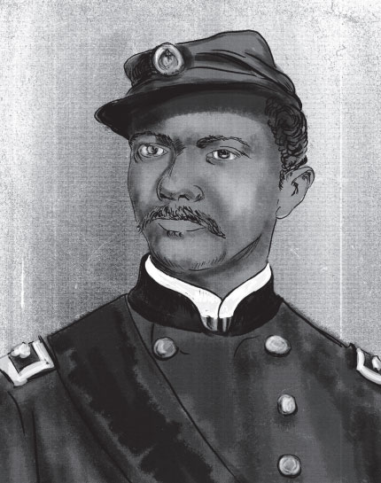 Alexander Thomas Augusta was the highest-ranking Black officer in the Union Army during the Civil War. (Vizulis German/DepositPhotos)History School Book Club Featured Books
- FOUNDING ERA
- Akhil Reed Amar —The Words That Made Us: America’s Constitutional Conversation: 1760–1840
- Ana Lucia Araujo —Humans in Shackles: An Atlantic History of Slavery
- Rick Atkinson —The British Are Coming: The War for America, Lexington to Princeton, 1775–1777
- Brooke Barbier —King Hancock: The Radical Influence of a Moderate Founding Father
- James G. Basker —Black Writers of the Founding Era
- T. H. Breen —The Will of the People: The Revolutionary Birth of America
- Lindsay M. Chervinsky —Making the Presidency: John Adams and the Precedents That Forged the Republic
- Joseph J. Ellis —The Cause: The American Revolution and Its Discontents, 1773–1783
- Glory Liu —Adam Smith’s America: How a Scottish Philosopher Became an Icon of American Capitalism
- Stacy Schiff —The Revolutionary: Samuel Adams
- LINCOLN AND THE CIVIL WAR
- John Avlon —Lincoln and the Fight for Peace
- Eric Foner —The Second Founding: How the Civil War and Reconstruction Made the Constitution
- Gary Gallagher —The Enduring Civil War: Reflections on the Great American Crisis
- Allen C. Guelzo —Our Ancient Faith: Lincoln, Democracy, and the American Experiment
- Harold Holzer —Brought Forth on This Continent: Abraham Lincoln and American Immigration
- Caroline Janney —Ends of War: The Unfinished Fight of Lee’s Army after Appomattox
- Jon Meacham —And There Was Light: Abraham Lincoln and the American Struggle
- Lucas Morel —Lincoln and the American Founding
- Elizabeth Varon —Armies of Deliverance: A New History of the Civil War
- Jonathan W. White —A Great and Good Man: Rare Firsthand Accounts of Abraham Lincoln
With this momentum, the Book Club is quickly becoming a trusted and enjoyable way for students to deepen their understanding of American history beyond the classroom.
Student Advisory Council
Founded in 2014, the Student Advisory Council (SAC) continues to offer high school students in grades 8–12 a distinctive platform to explore American history, while developing their leadership, communication, and critical thinking skills. Today, the SAC brings together more than 250 students from all 50 states and around the world, with alumni advancing to some of the nation’s top universities.
Students on our council meet one Saturday a month online to provide feedback on our programs and resources, explore documents in the Gilder Lehrman Collection, learn from historians about their work, and hear from other members. Their participation not only enhances the Institute’s offerings but also fosters a deeper appreciation for history and civic engagement among their peers.
Participation in the SAC empowers students to connect with like-minded peers across the country, build a strong academic and leadership profile, and make a lasting impact on the Institute’s mission of bringing history to life for learners everywhere.
David McCullough Essay Prizes
We proudly recognized 14 winners of the David McCullough Essay Prizes, honoring outstanding historical research and interpretation by high school students at Gilder Lehrman Affiliate Schools.
• 1st Prize: $5,000 (plus a $500 prize awarded to the school)
• 2nd Prize: $1,500 (plus a $500 prize awarded to the school)
• Five 3rd Prizes: $500 each
Named for Gilder Lehrman Life Trustee and Pulitzer Prize–winning historian David McCullough, the prizes celebrate young writers who demonstrate historical rigor, clarity of style, strong use of evidence, and the empathy and imagination that bring the past to life. This year’s competition drew exceptional submissions from across the country and abroad, reflecting the extraordinary talent and commitment of our Affiliate School students. We received 753 student submissions from 36 US states, Washington, DC, Bangladesh, Canada, China, India, Kazakhstan, Korea, Myanmar, Pakistan, Taiwan, Thailand, Turkey, and the United Kingdom.
The winning students exemplify the very best of high school historical scholarship. We extend our warmest congratulations to this year’s winners and participants and look forward to continuing this tradition of excellence in historical writing.
National History Academy Scholarships
The National History Academy is a four-week residential summer program in Middleburg, Virginia, that immerses rising 10th–12th grade students in the study of American history. Once again this year, the Gilder Lehrman Institute partnered with the Academy to make this experience accessible to students in our Affiliate School Program by awarding 20 full scholarships.
These scholarships covered room, board, learning materials, transportation, and admission to historic sites, ensuring that talented students from diverse backgrounds could participate fully in this unique opportunity to engage with history where it happened.
Gilder Lehrman Life Trustee
10 Years of the
Hamilton Education
Program
Since 2015, the Hamilton Education Program (EduHam) has transformed the way students engage with American history. In partnership with The Rockefeller Foundation and the producers of HAMILTON, the Gilder Lehrman Institute launched EduHam to provide Title I-eligible schools with unparalleled access to both the hit Broadway show and a curriculum that connects the founding era to their own lives.
Over the past decade, more than 210,000 students from New York City, Los Angeles, Chicago, and 22 other cities have attended HAMILTON through EduHam. More than 15,500 teachers and one million students nationwide have participated in EduHam Online, which extends the program’s reach far beyond the theater. For many students, HAMILTON was their first professional theater experience—an event they described as “lifechanging” and sparked new interest in history, theater, and civic engagement.
In classrooms, EduHam has inspired students to dig into primary sources and create original songs, poems, and
Students at EduHam New York Cityscenes that bring the founding era to life. Teachers report dramatic results: student knowledge of the founding era more than doubled, enthusiasm for learning soared, and civic engagement rose sharply. Students themselves say EduHam makes history “entertaining and easy,” helping them see the connections between past debates and the issues shaping our democracy today.
This year, the program continued its tradition of excellence. Nearly 7,000 New York City students attended matinees at the Richard Rodgers Theatre, along with 2,000 students in Los Angeles. Additionally, HAMILTON reached 2,500 students in rural communities who had the opportunity to participate in a Q&A session with HAMILTON cast and creative team members.
EduHam Online participation expanded by 94,000 students, with creative submissions to the competition and lottery increasing by 60 percent. From rap battles about the Federalists and Anti-Federalists to heartfelt monologues by middle schoolers, student performances reflect the enduring power of history told in their own voices.
As EduHam celebrates its 10th anniversary, we honor the vision that made it possible and the millions of young people whose lives it has already touched. With continued support, the Hamilton Education Program will carry its unifying, hopeful, and inclusive message to the next generation—helping students rise to write their own chapter in America’s great unfinished story.
Affiliate School Program
The Gilder Lehrman Institute’s Affiliate School Program has grown into a network of 37,725 K–12 schools, representing more than 100,000 teachers and 15 million students nationwide. Since 2009, the program has provided free resources, events, and tools designed to bring American history to life in classrooms of all sizes and settings. Growth continues each year, with more than 1,500 schools joining in 2025 alone.
The Affiliate School Program serves as a one-stop hub for educators, offering professional development, access to leading scholars, student opportunities, and both in-person and online experiences.
Teachers also receive free classroom-ready materials—such as posters, calendars, and resource guides—which were requested more than 47,000 times this year.
Popular offerings this year include our 2026 Gilder Lehrman Calendar, a set of posters showcasing propaganda images of Boston during the Revolutionary period, and a timeline covering the colonial to Revolutionary eras.
New member school districts include - Tuscaloosa Public Schools (Alabama)
- Palm Beach County Schools (Florida)
- Portland Public Schools (Oregon)
- Metro Nashville Public Schools (Tennessee)
- Sevier County Schools (Tennessee)
- Prince William County Schools (Virginia)
Our Growing Network of Affiliate Schools
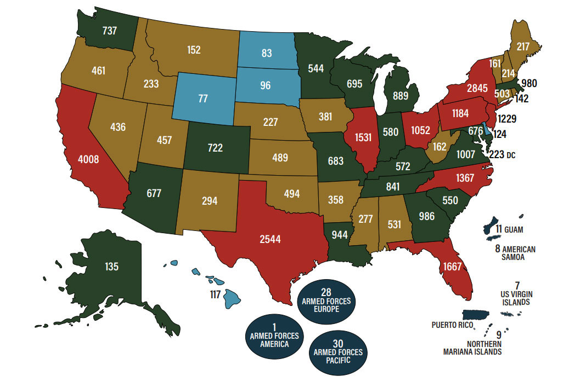National History Teacher of the Year
In 2025, the Gilder Lehrman Institute of American History honored Valencia Abbott, an educator at Rockingham Early College High School in Wentworth, North Carolina, as the National History Teacher of the Year.
Abbott, who has more than two decades of teaching experience, serves as the Social Studies Department chair and teaches civics at Rockingham Early College. She holds a BA in Political Science–Pre Law, an MA in Liberal Studies, and a Post-Baccalaureate Certificate in African American Studies from UNC Greensboro, as well as Add-On Licensure in Academically/Intellectually Gifted Education from Duke University.
Nominated by a student, Abbott has a deep commitment to students. She has earned her numerous distinctions, including the 2024 Civil Rights/Civil Liberties Excellence in Teaching Award, the 2024–2025 RECHS Teacher of the Year honor, and selection as a 2024 United States Holocaust Memorial Museum Teacher Fellow.
Abbott received a $10,000 award at a special ceremony on November 5, 2025, at the Harvard Club of New York City, presented by Pulitzer Prize– winner Stacy Schiff.
Now in its twenty-second year, the National History Teacher of the Year Award celebrates the essential role of teachers by honoring outstanding K–12 educators from every state, the District of Columbia, Department of Defense schools, and US territories.
state winners were selected by committees of teachers and education professionals.
A panel of distinguished historians, past awardees,and master teachers then chose one national winner, recognizing excellence in both classroom teaching and inspiring students to be active, knowledgeable citizens.
2025 National History
Teacher of the Year
-
2025 State History Teachers of the Year
- Alabama
Malinda Nichols -
 Alaska
Alaska
Lynda Leal Prince - 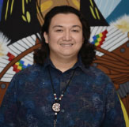 Arizona
Jeron Velasco - Arkansas
Elizabeth Prewet - Armed Forces Europe
Nadine Davis - California
Marsha Greco - 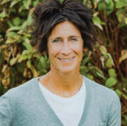 Colorado
Lisa Moot - 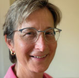 Connecticut
Nora Mocarski - Delaware
Daniel Mahler - DIstrict of Columbia
Kyra Zemanick - Florida
John Walsh - 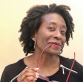 Georgia
Tania Davis - 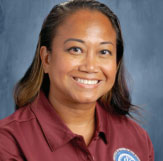 Hawaii
Michelle Levine - Idaho
Melissa Webster - Illinois
Nikoletta Antonakos - Indiana
Shelby Hall - Iowa
Jessica Dowell - Kansas
Shawn Hornung - Kentucky
Amanda Smith - Louisiana
Rex Randall Jones, Jr - 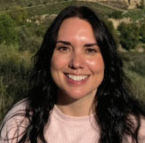 Maine
Sarah Campbell - Maryland
James Baker - Massachusetts
Jenny Staysniak - Michigan
Marie Sarnacki - Michigan
Gracia Elrick Cooper - Mississippi
Kreissa Reed - Missouri
Brian Esselman - Montana
Jeffrey Stanek - Nebraska
James Hulstein -
 Nevada
Nevada
Mitchell Kalin - 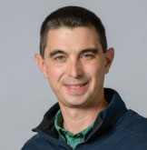 New Hampshire
Jonathan Browher - New Jersey
Robert Schulte - 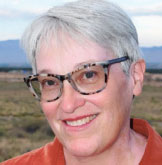 New Mexico
Kathryn (Katy) Hammel - New York
Prince Johnson - 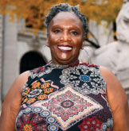 North Carolina
Valencia Abbot - 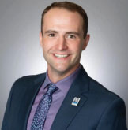 North Dakota
Landen Schmeichel - 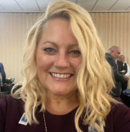 Ohio
Kimberly Huffman - Oklahoma
Jennifer Huf - 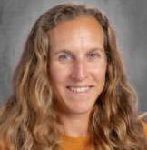 Oregon
Rebecca Eisenberg - Pennsylvania
Kenneth Kubistek - Rhode Island
Christina O’Brien - South Carolina
Robert DeCerbo - South Dakota
Nancy L. Deranleau - Tennessee
Dusty Helton - Texas
Caitlin Baumgarten - US Territories
Elisaia Ma’ilo - Utah
Christina Jacobs -
 Vermont
Vermont
Tara Martin - Virginia
Lewis Longenecker - Washington
Heather Miller - 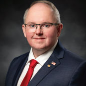 West Virginia
William Bell - Wisconsin
Alisha Neinfeldt - Wyoming
Cheryl Katz
Gettysburg College–
Gilder Lehrman MA in American History
The Gettysburg College–Gilder Lehrman MA in American History is a fully accredited, thirty-credit master’s degree program offered entirely online. Designed primarily for K–12 teachers, who comprise nearly 90% of the student population, the program also attracts museum professionals, community college instructors, and staff from the National Park Service. With its blend of rigorousscholarship and flexible online format, the program allows educators to deepen their knowledge of American history while advancing their careers.
- New MA Courses in 2025
- American Art and Material Culture
Prof. Jennifer Van Horn, University of Delaware - Law, Constitutions, and Governance in American History, 1700 to 1990
Prof. Gautham Rao, American University - The Civil Rights Movement
Prof. Charles McKinney, Rhodes College - The Fate of the Constitution
Prof. John Witt, Yale University - The History of the US-Mexican Borderlands
Prof. Sonia Hernández, Texas A&M - The Life and Times of Ida B. Wells
Prof. Mia Bay, University of Cambridge - Twelve Battles That Shaped American History
Prof. Craig Symonds, US Naval Academy - US Political History Since 1945
Prof. Beverly Gage, Yale University
“The biggest benefit of my experience in the GBC–GLI MA in American History program has been increasing the knowledge and excitement of my students in American History.”
“I left the program calling myself a historian, versus just a history teacher. I feel like I’m much more of an expert in my field. Most importantly, this program taught me to be a better writer and to analyze critically.”
of alumni agreed that
the experience in the MA in American History
made them a better teacher and that
the program had made them more
enthusiastic about teaching history.
Self-Paced Courses
Gilder Lehrman Self-Paced Courses—adapted from graduate courses in our MA program—offer educators flexible, at-home professional development across dozens of wide-ranging topics. Each course is led by a distinguished historian, bringing expert scholarship directly to teachers wherever they are.
Designed to be both affordable and impactful, these courses offer rich historical content, classroom-ready insights, and a certificate that awards 8–15 professional development credits upon completion. They have become a trusted way for teachers to deepen their knowledge, sharpen their practice, and earn PD credit on a schedule that works for them.
- New courses added this year
- African American History to Emancipation
- American Art and Material Culture of the 18th and 19th Centuries
- American Political History Since 1945
- Dwight D. Eisenhower and His Times
- The Civil Rights Movement
- The Fate of the American Constitution, 1787–1937
- The Life and Times of Ida B. Wells
- Twelve Battles That Shaped American History
Summer Professional Development
The Gilder Lehrman Institute’s summer 2025 professional development programs reaffirmed our central mission: to support educators with rigorous historical content, classroom-ready resources, and the inspiration that comes from learning together in community.
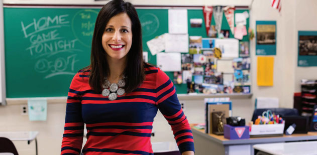 Sara Ziemnik, the 2017 National History Teacher of the Year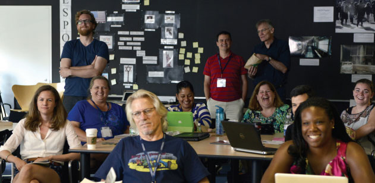 Teachers participating in a Summer Professional Development
Over the summer, the Institute offered 24 distinct professional development opportunities, ranging from intensive in-person seminars at partner institutions to accessible online. In total, we received nearly 4,000 registrations and applications across summer professionaldevelopment programs offered in 2025.
This year’s programming reflected both the breadth and depth of American history.
At Princeton University, the Statesmanship in American History Seminar, created in partnership with the James Madison Program, explored questions of leadership, governance, and civic responsibility.
Teachers learned directly from Allen C. Guelzo, the Thomas W. Smith Distinguished Research Scholar in the James Madison Program in American Ideals and Institutions at Princeton University.
In Springfield, Illinois, the Reframing Lincoln Seminar at the Abraham Lincoln Presidential Library and Museum examined how myths, memory, and shifting narratives have shaped our understanding of the sixteenth president. The seminar featured Jonathan W. White, professor of American studies at Christopher Newport University
Teachers also studied the Great Depression, the New Deal, and World War II in a seminar at Marist University. The program included lectures by David Woolner, senior fellow and resident historian of the Roosevelt Institute and professor of history at Marist University. Participants explored theconnections between Franklin D. Roosevelt’s New Deal policies and the global transformations of World War II, with special sessions at the FDR Library examining sources and museum exhibitions.
Alongside these thematic seminars, the Institute convened its Teacher Symposium, offering seven in-depth courses led by distinguished scholars and master teachers, and hosted 10 Teacher Seminars Online to ensure broad access for educators. The mix of in-person and online learning opportunities allowed teachers across the country—and beyond—to connect with leading historians and peers, exchange ideas, and return to their classrooms with renewed skills and insights.
By bringing together thousands of educators from diverse schools and communities, the Institute’s summer 2025 programs advanced our ongoing goal: to strengthen history education nationwide by empowering teachers with knowledge, tools, and networks that enrich their practice and inspire their students.
Wilderness Education Project
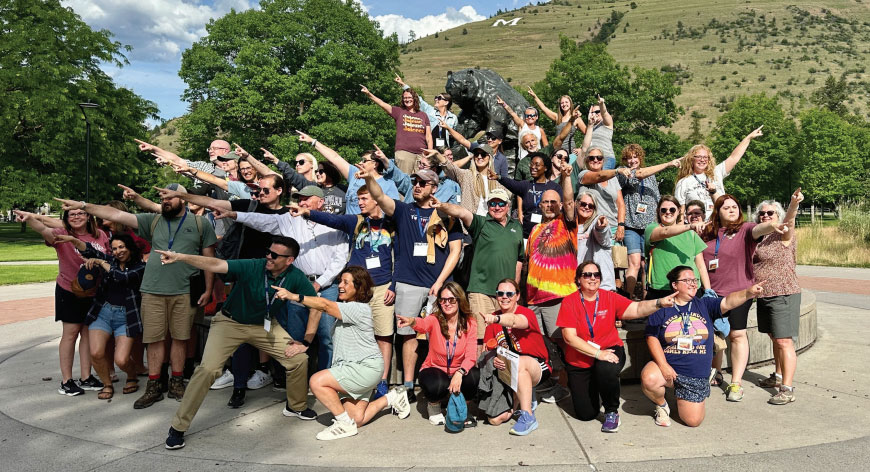 Teachers at WEP professional development workshop in Montana Our partnership with the Wilderness Education Project (WEP) continued to thrive in 2025, bringing innovative history programming to educators serving underserved districts in Virginia and Kentucky. Workshops for both programs are held in person. Each workshop is led by an eminent scholar on the topic being studied, and two Gilder Lehrman master teachers lead pedagogical sessions (one for elementary and one for secondary educators).
Project EXCEL supports a cohort of approximately 150 K–12 teachers, librarians, and administrators from underserved districts in western Virginia. Participants were engaged through self-paced online courses, four professional workshops held at the Roanoke Education Center during the school year, and a weeklong summer seminar in Missoula, Montana, which covered Lewis and Clark and the American West. Each of these resources was offered as part of a comprehensive curriculum designed to enhance teaching quality and student achievement among underserved populations.
Project TRAILS includes a cohort of approximately 100 K–12 teachers from underserved school districts in Kentucky. Held at Midway University’s Starks Center, the program offered three immersive in-person seminars, each focused on a pivotal era of American history. TRAILS also included a Boston summer seminar covering Colonial America and the American Revolution. By combining scholarly expertise with classroom practice, TRAILS brought history to life while empowering educators to inspire their students with new content and methods.
Together, EXCEL and TRAILS advanced the Institute’s commitment to expanding access to high-quality professional development for educators working in communities with the greatest need.
Veterans Legacy Program
We continue our partnership with the National Cemetery Administration’s Veterans Legacy Program by offering free professional development sessions, lesson plans, and online exhibitions focused on the legacy of Vietnam Veterans.
The Institute has published a new teaching unit, “Vietnam Veterans: Legacies of Service, 1965–2012,” featuring scholarship by Prof. William Sturkey (University of Pennsylvania) and lesson plans created by a master teacher. The resources explore topics such as the draft, military service, postwar benefits, and the ongoing contributions of Veterans to their communities. This curriculum provides students with the tools to connect national history with local Veterans’ stories.
The professional development programs surpassed expectations, reaching more than 338 teachers through spring workshops held in collaboration with national cemeteries.
Additionally, we engaged 69 educators through two four-day summer seminars, with hundreds more participating online. These sessions combined scholarly lectures, site-based learning at the National Museum of the Marine Corps and the LBJ Presidential Library and Museum, and pedagogy workshops, ensuring that educators left with both in-depth historical knowledge and practical classroom strategies.
Furthermore, the Legacies of Service Award student contest received 139 submissions—nearly triple our goal. This contest honored Veterans and service members interred in national and state cemeteries. Ten winners were selected to win $500 for their thoughtful research and creativity, showcasing projects that ranged from written work to podcasts to documentaries. Collectively, these initiatives engaged thousands of teachers and students in preserving and sharing the stories of Vietnam Veterans, ensuring that future generations will remember their service and sacrifices.
Gilder Lehrman Collection
The Gilder Lehrman Collection is central to our mission of integrating primary sources into the educational process—it is our greatest asset, enabling us to share unique resources with teachers. Currently, the Collection comprises more than 87,000 items, including letters, diaries, maps, pamphlets, books, newspapers, photographs, and other materials that document American political, social, and economic history from 1493 to the twentieth century.
In 2025, the Collection launched a subscription model which provides subscribers with access to an online archive of 70,000 digitized documents from its holdings.
Users can subscribe monthly or annually to download Collection documents from the archive, which is housed on the Institute’s website. This makes it easy for researchers to access the historical treasures of the Collection from anywhere.
Approximately 200 college and university libraries have subscribed to the Collection’s online archive to make this indispensable resource available to faculty, undergraduates, and graduate students.
Pop-Up Panel Exhibitions
 Pop-Up Panel Exhibition: Declaration 1776: the Big Bang of Modern Democracy
Pop-Up Panel Exhibition: Declaration 1776: the Big Bang of Modern Democracy
Gilder Lehrman Pop-Up Panel Exhibitions
- Alexander Hamilton: Immigrant, Patriot, Visionary
- Becoming the United States: Colonial America to Reconstruction
- Declaration 1776: The Big Bang of Modern Democracy
- Frederick Douglass: Advocate for Equality
- Freedom: A History of US
- Immigration: An American Story
- Who Can Vote?: A Brief History of Voting Rights in the United States
- World War I and America
- World War II: Voices of Service
Gilder Lehrman Pop-Up Panel Exhibitions bring historical documents into communities across the country, making history accessible and vivid outside of museum walls. These pop-up exhibitions are available for rent or purchase. They are accompanied by an exhibition guide that provides essential context and helps audiences engage with the material.
Each exhibition features reproductions of primary sources—letters, maps, engravings, broadsides, and photographs—enabling viewers to connect directly with the voices and documents of the past.
By placing historically grounded, visually engaging exhibitions in classrooms, libraries, civic centers, museums, and other venues, the Institute expands access to primary sources and historical thinking beyond traditional academic spaces. These exhibitions serve as powerful tools for sparking curiosity, enhancing curriculum, and drawing diverse audiences into conversations about America’s past.
Book Breaks
Launched in 2020, Book Breaks has grown into a weekly destination for history lovers, educators, and curious learners worldwide. In 2025, we continued to offer Book Breaks free and open to all, with new live sessions every Sunday at 2 p.m. ET via Zoom. This year, 50 students won a prize for submitting the best question for that week’s historian. They were honored as History Scholar of the Week and won a $50 gift certificate to the Gilder Lehrman Gift Shop.
The Book Breaks archive now includes 300 episodes, featuring eminent voices in American history—Akhil Reed Amar, David Blight, Lonnie Bunch, Ken Burns, Ron Chernow, Eric Foner, Doris Kearns Goodwin, Annette Gordon-Reed, Peniel Joseph, Jon Meacham, Brenda Stevenson, Elizabeth Varon, Fareed Zakaria, and many others.
- Ken Burns
- Ron Chernow
- Edda L. Fields-Black
- 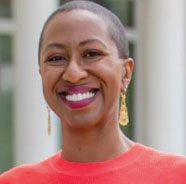 Justene Hill Edwards
- 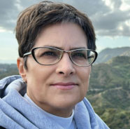 Martha S. Jones
- Doris Kearns Goodwin
- Sharon McMahon
- Jon Meacham
- 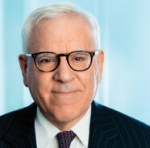 Jon Meacham
- Zaakir Tameez
Inside the Vault
Inside the Vault is a monthly online program that highlights unique primary sources from the Gilder Lehrman Collection. Curators and scholars discuss historical documents from iconic treasures, such as the Declaration of Independence, the Constitution, and the Emancipation Proclamation, to personal letters that reveal the contributions of ordinary Americans.
A total of 83 past episodes of Inside the Vault are archived on the Gilder Lehrman website and can be accessed for free.
Book Prizes
For 35 years, the Gilder Lehrman Institute has awarded book prizes to recognize outstanding scholarship and promote public engagement with American history. Each year, a panel of distinguished scholars carefully reviews submissions and selects a group of finalists, from which the prize board chooses the winning title.
Winners receive a significant financial award and are honored at an elegant ceremony featuring distinguished speakers. The celebration not only recognizes scholarly excellence but also invites teachers, students, and the wider public to hear the author speak, bringing important historical works into broader conversations.
The Gilder Lehrman Lincoln Prize
The $50,000 Gilder Lehrman Lincoln Prize is awarded annually for the best scholarly work with a broad public appeal on Abraham Lincoln, the American Civil War soldier, or the American Civil War era.
The 2025 laureate is Edda L. Fields-Black, author of COMBEE: Harriet Tubman, the Combahee River Raid, and Black Freedom During the Civil War (Oxford University Press).
The five other finalists that the jury selected from seventyone nominations were
- Robert K. D. Colby for An Unholy Traffic: Slave Trading in the Civil War South (Oxford University Press)
- Lesley J. Gordon for Dread Danger: Cowardice and Combat in the American Civil War (Cambridge University Press)
- Jon Grinspan for Wide Awake: The Forgotten Force That Elected Lincoln and Spurred the Civil War (Bloomsbury Publishin)
- Allen C. Guelzo for Our Ancient Faith: Lincoln, Democracy, and the American Experiment (Knopf)
- Nigel Hamilton fo Lincoln vs. Davis: The War of the Presidents (Little, Brown and Company)
The Frederick Douglass Book Prize
The $25,000 Frederick Douglass Book Prize is awarded in partnership with the Gilder Lehrman Center for the Study of Slavery, Resistance, and Abolition at Yale University. It is given to an outstanding non-fiction book in English that focuses on slavery, resistance, or abolition. All geographical areas and time periods are eligible.
The winner of the 2025 prize is Justene Hill Edwards for Savings and Trust: The Rise and Betrayal of the Freedman’s Bank (W. W. Norton and Company).
The finalists for the 2025 prize were
- Keidrick Roy for American Dark Age: Racial Feudalism and the Rise of Black Liberalism (Princeton University Press)
- Makhroufi Ousmane Traoré for Slavery, Resistance, and Identity in Early Modern West Africa: The Ethnic-State of Gajaaga(Cambridge University Press)
- Gloria McCahon Whiting for Belonging: An Intimate History of Slavery and Family in Early New England (University of Pennsylvania Press)
The George Washington Prize
The Gilder Lehrman Institute, in partnership with Washington College and George Washington’s Mount Vernon, presents the George Washington Prize. The $50,000 prize recognizes the best new book on George Washington and his times (the Revolutionary and founding eras, ca. 1760–1820) that reaches a broad, non-scholarly public audience.
The 2025 prize was awarded to Tyson Reeder for Serpent in Eden: Foreign Meddling and Partisan Politics in James Madison’s America (Oxford University Press).

The other finalists for this year’s prize were
- Jane E. Calvert for Penman of the Founding: A Biography of John Dickinson (Oxford University Press)
- Francis D. Cogliano for A Revolutionary Friendship: Washington, Jefferson, and the American Republic (Harvard University Press)
- Michael D. Hattem for The Memory of ’76: The Revolution in American History (Yale University Press)
- Cara Rogers Stevens for Thomas Jefferson and the Fight Against Slavery (University Press of Kansas)
The Gilder Lehrman Military History Prize
The $50,000 Gilder Lehrman Military History Prize recognizes the best book of the year on American military history in English, distinguished by its scholarship, its contribution to the literature, and its appeal to the general reading public.
This year, the prize was awarded to Evan Mawdsley for Supremacy at Sea: Task Force 58 and the Central Pacific Victory(Yale University Press).
The jury selected two other finalists from ninety-four nominations
- Tim Cook for The Good Allies: How Canada and the United States Fought Together to Defeat Fascism during the Second World War (Allen Lane)
- Vaughn Scribner for Under Alien Skies: Environment, Suffering, and the Defeat of the British Military in Revolutionary America (The University of North Carolina Press)
History Now
History Now, the online journal of the Gilder Lehrman Institute, offers the latest in historical scholarship to K–12 teachers, students, and general readers. Each issue focuses on a major topic in American history and features original essays by leading scholars, specifically written for ourjournal. Past contributors include prizewinning historians such as David Blight, Annette Gordon-Reed, Manisha Sinha, and Alan Taylor, among others. Published quarterly, History Now is now free for everyone and no longer requires a subscription to access its current issue and archive.
Since 2004, the Institute has published 77 issues of History Now featuring more than 400 essays. The following issues were published this year:
No. 74, “The Declaration of Independence and Women’s Rights”
(Spring 2025)
No. 75, “The Electoral College and the History of Presidential Elections”
(Summer 2025)
No. 76, “The Natural Resources of the United States in the Shaping of History”
(Fall 2025)
No. 77, “Major Figures in American Economic History”
(Winter 2025)
Fellowships
The Gilder Lehman Institute’s fellowship programs provide undergraduates, PhD students, and scholars with funding and access to archives supporting research in American history. These fellowships significantly impact historical scholarship by enabling groundbreaking studies, fostering academic collaboration, and enriching history teaching at all levels.
College Fellowships in American History
The Institute offers short-term research fellowships of $3,000 each to undergraduate students majoring or minoring in history, American studies, Africana studies, political science, or related fields. This program, launched in 2022, allows young historians to pursue research at the Gilder Lehrman Collection and other archives in New York City.
Scholarly Fellowship Program
The Institute provides short-term research fellowships of $3,000 each to doctoral candidates, college and university faculty at every rank, and independent scholars working in American history. The Institute has awarded 723 fellowships since 1994.
 Martin Carlino, a former Scholarly Fellow and Affiliate School teacher, with a star student
Martin Carlino, a former Scholarly Fellow and Affiliate School teacher, with a star student
Scholarly Advisory Board
In 2025, historians on the Gilder Lehrman Institute’s 480-member Scholarly Advisory Board were recognized for the following contributions to American history scholarship, to name just a few:
- Ana Lucia Araujo received a 2025 Guggenheim Fellowship and was a finalist for the Museum of African American History’s Stone Book Award for Humans in Shackles: An Atlantic History of Slavery
- Francis D. Cogliano was a finalist for the 2025 George Washington Prize forA Revolutionary Friendship: Washington, Jefferson, and the American Republic
- Saul Cornell received the Lepage Center Award for Historical Work in the Public Interest
- Kathleen DuVal won both the 2025 Pulitzer Prize for History and the 2025 Bancroft Prize for Native Nations: A Millennium in North America
- Philip D. Morgan received the American Historical Association’s Award for Scholarly Distinction to senior historians for lifetime achievement
- Seth Rockman was a finalist for the 2025 Pulitzer Prize for History and the winner of the Beveridge Family Prize in the history of the US, Latin America, or Canada since 1492 for Plantation Goods: A Material History of American Slavery
Teacher Advisory Council
The Gilder Lehrman Teacher Advisory Council advises the Institute on programs and resources that best support American history in K–12 classrooms. The 32 members— many of whom are prior National and State History Teachers of the Year winners—help ensure our work is grounded in real classroom practice by bringing diverse perspectives from across grade levels, regions, and schoolcontexts, and by elevating the voices of educators who know firsthand what students and teachers need to succeed.
Board of Trustees
OFFICERS
Co-Chairmen
Richard Gilder (1932–2020)
Lewis E. Lehrman
Vice Chairs
Robert H. Niehaus
Shaiza Rizavi
Secretary
Russell P. Pennoyer
Treasurer
Joseph DiMenna
MEMBERS
Edward L. Ayers
S. Andrew Banks
James G. Basker
(President and CEO)
John D. Britton II
Alysha Butler
Kenneth Chenault
Robert C. Daum
Dixie De Luca
Patrick Duff
Grady Durham
Regina Gannon
Henry Louis Gates, Jr.
Bruce Gordon
Annette Gordon-Reed
Allen C. Guelzo
Elizabeth Herbst-Brady
Phillip A. Jackson
Alan Jones
Gladstone N. Jones, III
Daniel P. Jordan
(1938–2024), Life Trustee
Thomas D. Lehrman
Stephen F. Mandel Jr.
Michael McCormick
David McCullough
(1933–2022), Life Trustee
John L. Nau III
Linda Pace
William J. Poorvu
Julian Robertson
(1932–2022), Life Trustee
Valerie Rockefeller
Mary Caslin Ross
Mark Shafir
Nancy Simpkins
Dorothy (Debbie) Stapleton
Luz Towns-Miranda
Richard Webste
President’s Council
MEMBERS
Joe Amato
Celeste Archer
John P. Avlon
Roger Barbee
M. Barry Bausano
Amanda Bellows
Louccas Bou Jaoude
Julian Braxton
A. Dev Chodry
Kevin Cline
Joseph Coffey
Andrew C. Coles
Kimberly Collins
Sergio de Alba
Katie Drucker
Richard Ekman
Susan Fales-Hill
Yaroslav Faybishenko
Andrew Fentress
Mercedes Franklin
Amanda Geduld
Elisabeth Gray
Lara Heimert
Lesley Herrmann
Scott Higgins
Michelle D. Johnson
Patricia Redd Johnson
Amanda Jones
Christine Kang
Allison Kraft
Sidney Lapidus
Rosanne Lichatin
Nnenna Lynch
Claire Svetlik Mann
Christine Martin
Nate McAlister
Brian McDonald
Ariel Merrick
Sean Mintz
S. Griffin Norquist
Alvin Patrick
Arielle Patrick
Kelly Purcell
Maggie Rapp
Keisha Rembert
Alexander T. Robertson
Susan Saidenberg
Ryan Scheb
Abigail Seldin
Molly O’Meara Sheehan
Graham Spence
Sheila Stone
Josh Struzziery
Peter Tirschwell
Joseph Welch
Chris Whitford
Ben Williams
Sara Ziemnik
Donors
A&E Television Networks
Abbett Family Foundation
The Achelis and Bodman
Foundation
Acorn Hill Foundation, Inc.
Sharon Alter
Anonymous
Ariel Investments, LLC
Mary Ann Ashcraft
Jennifer Jones Austin
Michael Bacior
James E. Bacon
Mark Bailey
Bank of America Charitable
Foundation
S. Andrew Banks and Dame
Pamela Gordon Banks
Tim and Michele Barakett
Foundation
Ken Bartels
Judith Basker
Robert Edward Basker
John and Dalene Beaton
Nancy Beckley
Cathie Behrend
David Edward Behrend
Angela and Joseph Bellanca
Amanda Brickell Bellows and
Marcus Bellows
Bob Bender
Rebekah Berkowitz
Thomas A. Bernstein
Michael Billet
Michael and Eryn Bingle
Constance Birkelund
Michael Birkner
Craig R. Bjorklund
Richard and Cheryl Blackett
BlackRock, Inc.
David W. Blight
Paul E. Bloch
Bloomberg Philanthropies
V. J. Blue
Louccas Bou Jaoude
Barbara Bowen
John and Jasanna Britton
Sam and Susie Britton
Estate of Peter Buck
Michael and Ann Bunyaner
Barbara Burgan
Michael Burkholder
Diane and Michael Camerota
William I. Campbell
Alice Cannon
Frances Carmichael-Jones
Carnegie Corporation of
New York
Lisa and Richard Cashin
John Byrne Chamberlin
Charina Endowment Fund, Inc.
Bonnie and James Chemel
Kenneth and Kathryn Chenault
Ron Chernow
Jonathan and Priscilla Clark
Suzanne Clary
Monica Coccia
Dale Cochran
James Coe Jr.
Kimberly Collins
Consolidated Edison, Inc.
Constantia Constantinou
Kevin Cooper
Cynthia R. Copeland
Lorraine Cortes-Vazquez
Elisabeth Creech
Diana Crispi
Crosswols Foundation
Marie Curry
Anthony and Lorraine Czarnecki
Julie and Robert Daum
Jack David Family Foundation
George Davidson
John Davis
Michael Davis
Dixie and David De Luca
Sabina Daley Deaton and
Adam Deaton
Joseph DiMenna
Christopher Dorval
Peggy P. Duckett
Alice Duff
John P. Duffell
Grady and Lori Durham
Kenneth B. Ebert
Richard and Caroline Ekman
Richard Emery
Lisbeth Eng
John and Linda Ettinger
John Exline
Yaroslav Faybishenko
Faybishenko Rubinshteyn
Family Fund
Gail Finney
The Harmes C. Fishback
Foundation Trust
Randy Fishfader
Donald Fitzgibbons
Kenneth C. and Andrea Frazier
David Frey
Kathryn Frischknecht
Donald Gallagher
Amy Gaudrault
Archibald and Linda Gillies
Annika Goldman
Dorothy Tapper Goldman
Foundation
David Goldsmith
Elizabeth Goodenough
Paul Goodof
Laura Goorvitch
Bruce Gordon and
Tawana Tibbs The Gordon
and Tibbs
Family Fund
James Gosselink
Michael Graff and Carol Ostrow
Susan W. Gray
Elysa Greenblatt
Lisa Greenwald
Teresa Grosch
Samuel Gross
Samuel L. Guillory
The Habe Foundation
Ann and Paul Hager
Michelena Hallie
Bryan Haltermann
Conrad K. and Marsha Harper
Harrison Family Fund, Inc.
Robert and Jane Harrison
Foundation
Cary Smith Hart
Reid D. Hausmann
Viviane Hays
Ellen Hecht
Lara Heimert
The Helmerich Trust
Herbst Family Foundation
Susan Hermanson
Lesley and Richard Herrmann
Charles Higgins
Ursula Higgins
Robert Hines
Cecilia Hoang
Henry Hagon Hodges
Mandel Holland
Antoinette Basker Howell
Robert J. Howell
Lara Ignaczak
immersionED
William and Cathy Ingram
Gregory D. Islan
Martin Jacobs
Carolyn and Brian Jaffe
Amabel and Tony James
James Family Charitable
Foundation
Satinder Jawanda
David A.G. Johnson
E. Thomas Johnson Jr.
Erika Johnson
Mark Johnson Household
Patricia Redd Johnson
Steven Joseph
Ivan Jurin
Miriam Kahn
Rick Kardon
Mitchell Karp
Robert and Milly Kayyem
Suzanne and Jonathan Kelly
Maureen Kenefick
Sue Kerns
Natalie Kim
The Elbrun and Peter
Kimmelman Family
Foundation
A. P. Kirby, Jr. Foundation
F. M. Kirby Foundation
Jefferson W. Kirby
S. Dillard Kirby
Alan and Kathryn
Klingenstein Family
Foundation
Gerry R. Kohler
Kathryn Krauss
Scott Kulakowski
Donald LaPlante
Leslie Lawner
Robert J. and Linda Lawrence
Thomas D. Lehrman
The Leibowitz and Greenway
Family Charitable Foundation
Caryl Levin
LFH Foundation
Ken and Toni Liebman
Michael Lorraine
Eva Lund
Nnenna J. Lynch and
Jonathon Kahn
John and Cathy Mack
The Malkin Fund, Inc.
Fred Manaster
Steve and Sue Mandel
Lise Martina
Bennett Matelson
Daniel Mathieu
Maxwell/Hanrahan Foundation
Fred Maytag Family Foundation
Edward G. and Jeanne G.
McAnaney
The McCormick Family
Foundation
Brian and Mee Hyun McDonald
Patricia McElhone
James and Laurie McGuire
Bryant McInnis
Lesley McIntire
Michael McKinley
Linda McKinstry
Thomas M. McNamara
James L. and Rosalie C. Means
Richard G. Menaker and
Faith Ritchie
Ariel Merrick
Elise Kelsey Merrow
Harriett Michael
Microsoft Corporation
Mark Miller
Melanie Miller
Randall Miller
Steven Harry Mintz
Mintz Giving Fund
5000 Broadway Productions, Inc.
Don Miskulin
Modestus Bauer Foundation
Michael Moen
Henry Molina
Jean Montgomery
Gayle L. Moore
Robert Moore
Joel Motley
Kathrine Mott
Ruthard C. Murphy
Sam Murray
Susan Myers
National Constitution Center
John L. Nau, III
Susan Nelson
Doreen Neuhoff Uhas-Sauer
New York Life Foundation
at New York Life Insurance
Company
Newcomb-Hargraves
Foundation
Bob and Kate Niehaus
Lisette Nieves and
Gregory Gunn
Kathleen Niles
Griff Norquist
Kevin M. O’Hagan
Molly O’Meara Sheehan
Virginia Ober
Morris W. Offit
Susan Oppenheim
Linda Pace
Helen Papoulias
Paramount Entertainment
Rosanne Patchen
Emmy and David Patterson
Robin Payes
Frank J. Pedone
Russell and Helen Pennoyer
Edwin Perry
Carla Peterson
Steven Pfeiffer
Niko Pfund
Lincoln and Jennifer Phillippi
Todd Pietri
Daniel Pinkel and
Donna Albertson
Michael Piscal
Portia Poindexter
The Previdi Family Fund
Jeanette M. Providence
Kelly Purcell
Thomas P. Putnam
Ernest Pysher
Jesse B. Rauch
John Rex-Waller
Helena Reynolds
Shaiza Rizavi and Jon Friedland
Peter Rizzo
Robertson Foundation
Gayle Robinson
Valerie Rockefeller and
Jeffery Shames
The Rockefeller Foundation
Marni Roder
Ajena Rogers
Mary Caslin Ross and Alex Ross
Sylvester Rowe
Adam Rowell
Allan Ruter
Susan Saidenberg
Julie and Nick Sakellariadis
San Diego Foundation
William Schauman
Lisa and Bob Schultz
Steven Schwartz
Cecil Carusi Scott
Gary Scott
Jayla Scott
Margaret Scott
Jennifer Seal
Christopher Seck and
Yuna Yang
Jeffrey Seller
Bill SellersMichael Shinagel
Short Family Foundation
Robert Shue
Barbara and Barry Silberman
Simon & Schuster
Nancy K. Simpkins
Mary and Alok Singh
Cameron Smith
Todd Solmson
Jean and William Soman
Stephanie Sosnow
Graham Spence and
Marieke Beeuwkes
Estelle Stamm
Mrs. Dorothy and
Ambassador Craig Stapleton
Stapleton Charitable Trust
Adam Stevens
Sheila M. Stone
Sandra Surface
Christopher Mann and
Claire Svetlik
Richard Sylla
Tara Syme
Stephen Szymanski
Susan Tane
John Thorn
Stephanie Toothman
John Treece
Trinity Church
Frank P. Trotta Jr. and
Susan Piening
Douglas and Vera Twigg
Ed Uihlein Family Foundation
US Department of
Veterans Affairs
Melissa Vail and Norman Selby
Angela Vallot and
James G. Basker
Anne E. Vallot-Basker
Carla Villacorta
Susan Walden
Lucy R. Waletzky
Larry Walker
Helen and Will Webster
Foundation
Theodore V. and Nina Wells
Russell Wheeler
Scott Wild
Colleen Wilford
Arsenia Williams
Glenn Franklin Williams
The Willing & O’Donnell
Charitable Giving Fund
Wendell L. Willkie
Kirk Wilson
John Winthrop Charity Trust
Carole Woods
Alfred Wurglitz
Jonathan Yellen
Dale and James Young
Barbara and David Zalaznick
Foundation
Robert Zilg
Jack Zoeller
Patricia Miller Zollar
The Zoom Foundation
Martin Zottola
Great Teaching Shapes Great Citizens
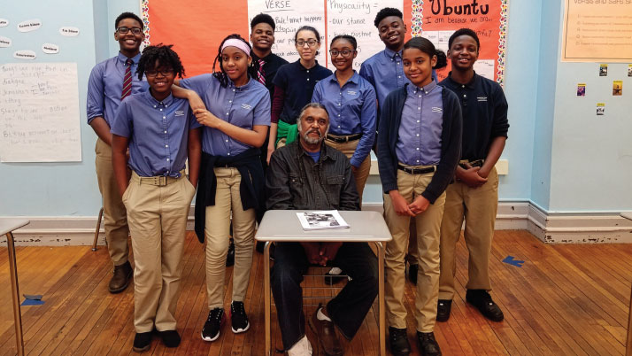 Middle school students at Affiliate School, Brooklyn East Collegiate, with Claude Oliver, son of Civil Rights leader Rev. C. Herbert OliverA powerful lesson can change how a young person sees the world. Your gift equips teachers with high-quality resources and brings primary sources to life for students nationwide—building historical knowledge and the habits of informed citizenship.
Your gift fuels: Teacher professional development, student scholarships and contests, the Gilder Lehrman Collection’s digital resources, and classroom materials that make history vivid and accessible.
The Gilder Lehrman Institute of American History is a 501(c)(3) nonprofit. All donations are tax-deductible to the extent allowed by law.
Give today: gilderlehrman.org | 501(c)(3) tax-deductible
checks: 49 West 45th St., 2nd Fl., New York, NY 10036
stock/wire: development@gilderlehrman.org
More ways to support the Institute: Recurring gifts, employer matches, tributes, DAFs, IRA QCDs, and planned gifts.
contact: development@gilderlehrman.org
We are deeply grateful to every donor who helped make this year’s achievements possible. Whether you gave $10 or $10,000, your support ensures that history education remains accessible, accurate, and inspiring for learners everywhere. Thank you for being part of the Gilder Lehrman community and for believing that history—and the students who study it—matter.
49 West 45th Street, Second Floor • New York, NY 10036
646-366-9666 • gilderlehrman.org